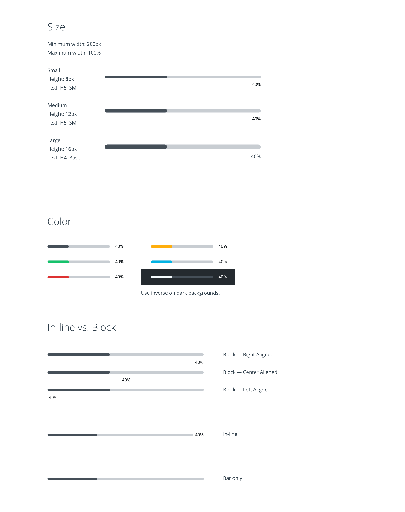
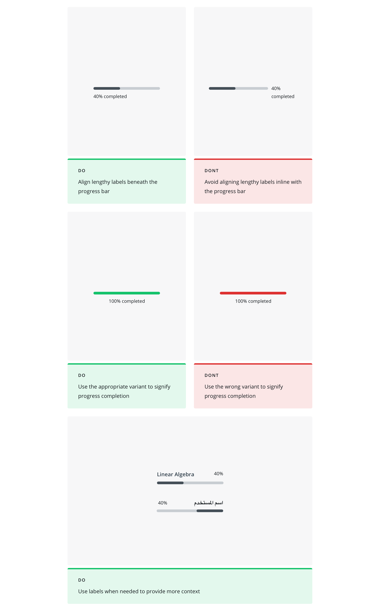

Design Systems
Progress Bar Component
Veritas design system
My Role
- Visual Designer
Timeline
- Mar. 2019 - Apr. 2019
Team
- Design System Engineers, Product Designers
Responsibilities
- Research, Usability Testing, Systems Thinking

Background
I had the opportunity to work on Udacity’s design system, Veritas. I researched and designed the progress bar component for designers and engineers to use throughout the Udacity interface.
The progress bar component is used to visually represent the completion of a task or operation. It informs users about activities that will take time or about progress of a multi-step activity. This helps users to be prepared to wait and leads to less frustration.
Research
Progress bars increase user satisfaction and boosts respondent engagement. There should be a label when necessary so the user knows what they are waiting for.
Determinate progress bars visually indicate how long an operation will take from 0 to 100%. Indeterminate progress bars are used when a user has to wait while something is loading. It continuously scrolls until the content loads. The team and I decided to create a separate component for this.
Progress bars should be selectively used even though they are helpful but can also cause frustration among users. They should:
1. Inform the user why they need to wait — so they won't be frustrated
2. Be clearly visible — if the user can't see the progress bar it defeats the purpose of having one
3. Continuously be moving — so the user knows the operation is still working
4. Accurate — don't want to give users a false estimate
Component Audit
Before starting to design the component, the team and I conducted an audit throughout the site and product to see where the progress bar is currently used which also helped define other potential use cases. It seemed like there were 3 main use cases.
1. Percent of progress — 40%
2. Ratio — 4/6 correct
3. Loading — with percent or without percent

Defining the Component
It was important to keep in mind accessibility and usability when designing the progress bar. Since the component would be used globally, I had to ensure that there were use cases that would support all languages. I also had to create proper documentation that developers and designers could refer to.
Do's and Don'ts
Reflection
Designing a component was very different than any other feature I've worked on in the past. The users in this case were engineers and designers who would use the component throughout the product.
1. Having a cohesive design system can drastically improve work flow by increasing efficiency when designing and developing.
2. It ensures that the product will have a cohesive visual design that aligns with the site.
3. Important to work with developers throughout the process to ensure alignment and create efficient workflows.